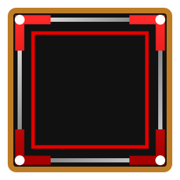

CHAPTER
장소명
장소 설명
SYSTEM


STORY
START
1 / 1
CURRENT STORY · DIALOGUE JUMP
대사 바로 이동
CURRENT STORY · SCENE SELECT
장면 선택
CURRENT STORY · EFFECT PREVIEW
연출 모아보기
스토리 종료
현재 스토리 구간이 끝났습니다.
Enter/Space 다음
Backspace 이전
J 대사 이동
C 장면 선택
E 연출 모아보기